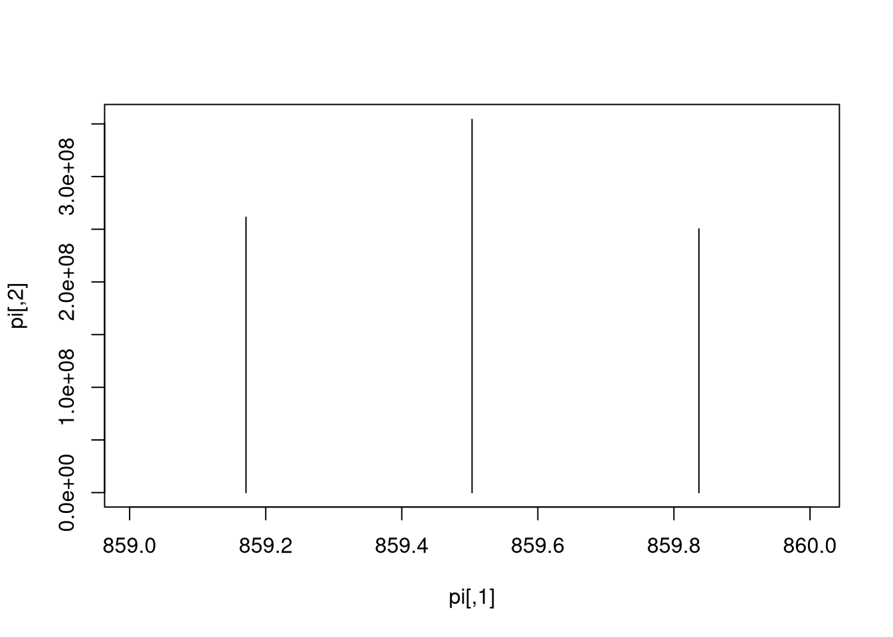
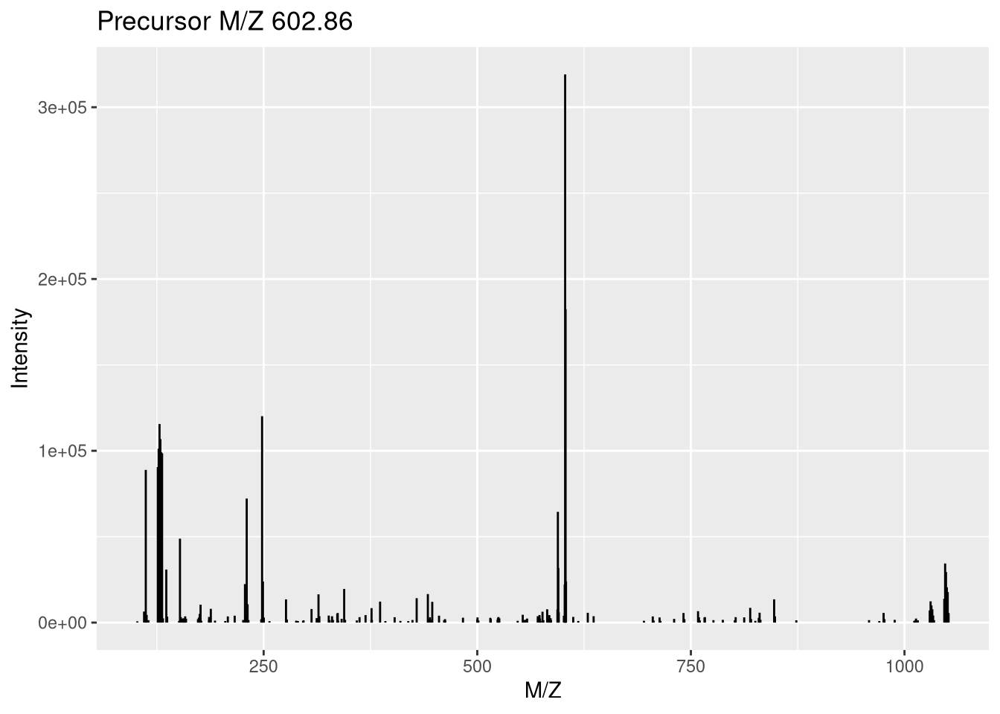
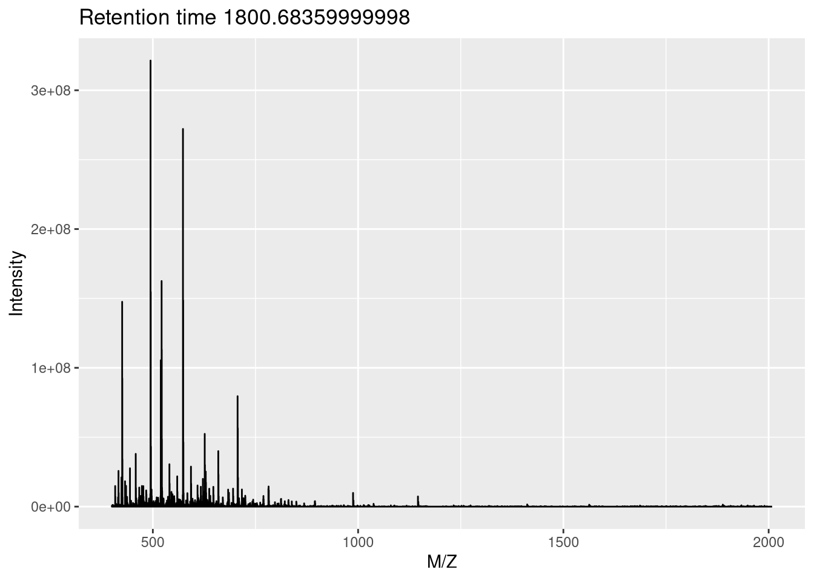
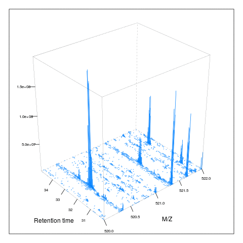
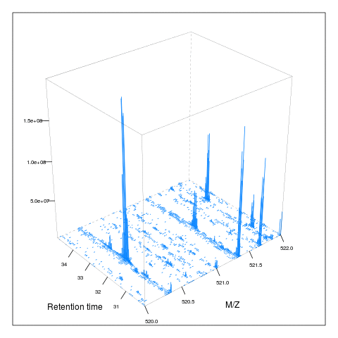

Chapter 3 Raw MS data: mzR and MSnbase
| Data type | File format | Data structure | Package | |
|---|---|---|---|---|
| 1 | Raw | mzXML or mzML | mzRpwiz or mzRramp | mzR |
| 2 | Raw | mzXML or mzML | list of MassSpectrum objects | MALDIquantForeign |
| 3 | Raw | mzXML or mzML | MSnExp | MSnbase |
| 7 | Peak lists | mgf | MSnExp | MSnbase |
In this section, we will learn how to read raw data in one of the commonly used open formats (mzML, mzXML and netCDF) into R using mzR (low level access) and MSnbase (higher level abstraction).
3.1 Low level access
The mzR package in a direct interface to the proteowizard code base. It includes a substantial proportion of pwiz's C/C++ code for fast and efficient parsing of these large raw data files.
Let's start by using some raw data files from the msdata package. After loading it, we use the proteomics() function to return the full file names for two raw data files. We will start by focusing on the second one.
library("msdata")
f <- proteomics(full.names = TRUE)
f## [1] "/home/lgatto/R/x86_64-pc-linux-gnu-library/4.0/msdata/proteomics/MRM-standmix-5.mzML.gz"
## [2] "/home/lgatto/R/x86_64-pc-linux-gnu-library/4.0/msdata/proteomics/MS3TMT10_01022016_32917-33481.mzML.gz"
## [3] "/home/lgatto/R/x86_64-pc-linux-gnu-library/4.0/msdata/proteomics/MS3TMT11.mzML"
## [4] "/home/lgatto/R/x86_64-pc-linux-gnu-library/4.0/msdata/proteomics/TMT_Erwinia_1uLSike_Top10HCD_isol2_45stepped_60min_01-20141210.mzML.gz"
## [5] "/home/lgatto/R/x86_64-pc-linux-gnu-library/4.0/msdata/proteomics/TMT_Erwinia_1uLSike_Top10HCD_isol2_45stepped_60min_01.mzML.gz"(f2 <- grep("20141210", f, value = TRUE))## [1] "/home/lgatto/R/x86_64-pc-linux-gnu-library/4.0/msdata/proteomics/TMT_Erwinia_1uLSike_Top10HCD_isol2_45stepped_60min_01-20141210.mzML.gz"The three main functions of mzR are
-
openMSfileto create a file handle to a raw data file -
headerto extract metadata about the spectra contained in the file -
peaksto extract one or multiple spectra of interest.
Other functions such as instrumentInfo, or runInfo can be used to gather general information about a run.
library("mzR")
ms <- openMSfile(f2)
ms## Mass Spectrometry file handle.
## Filename: TMT_Erwinia_1uLSike_Top10HCD_isol2_45stepped_60min_01-20141210.mzML.gz
## Number of scans: 7534hd <- header(ms)
dim(hd)## [1] 7534 31names(hd)## [1] "seqNum" "acquisitionNum"
## [3] "msLevel" "polarity"
## [5] "peaksCount" "totIonCurrent"
## [7] "retentionTime" "basePeakMZ"
## [9] "basePeakIntensity" "collisionEnergy"
## [11] "ionisationEnergy" "lowMZ"
## [13] "highMZ" "precursorScanNum"
## [15] "precursorMZ" "precursorCharge"
## [17] "precursorIntensity" "mergedScan"
## [19] "mergedResultScanNum" "mergedResultStartScanNum"
## [21] "mergedResultEndScanNum" "injectionTime"
## [23] "filterString" "spectrumId"
## [25] "centroided" "ionMobilityDriftTime"
## [27] "isolationWindowTargetMZ" "isolationWindowLowerOffset"
## [29] "isolationWindowUpperOffset" "scanWindowLowerLimit"
## [31] "scanWindowUpperLimit"head(peaks(ms, 117))## [,1] [,2]
## [1,] 399.9976 0
## [2,] 399.9991 0
## [3,] 400.0006 0
## [4,] 400.0021 0
## [5,] 400.2955 0
## [6,] 400.2970 0str(peaks(ms, 1:5))## List of 5
## $ : num [1:25800, 1:2] 400 400 400 400 400 ...
## $ : num [1:25934, 1:2] 400 400 400 400 400 ...
## $ : num [1:26148, 1:2] 400 400 400 400 400 ...
## $ : num [1:26330, 1:2] 400 400 400 400 400 ...
## $ : num [1:26463, 1:2] 400 400 400 400 400 ...Exercise
Let's extract the index of the MS2 spectrum with the highest base peak intensity and plot its spectrum. Is the data centroided or in profile mode?
hd2 <- hd[hd$msLevel == 2, ]
i <- which.max(hd2$basePeakIntensity)
hd2[i, ]## seqNum acquisitionNum msLevel polarity peaksCount totIonCurrent
## 5404 5404 5404 2 1 275 2283283712
## retentionTime basePeakMZ basePeakIntensity collisionEnergy
## 5404 2751.313 859.5032 354288224 45
## ionisationEnergy lowMZ highMZ precursorScanNum precursorMZ
## 5404 0 100.5031 1995.63 5403 859.1722
## precursorCharge precursorIntensity mergedScan mergedResultScanNum
## 5404 3 627820480 NA NA
## mergedResultStartScanNum mergedResultEndScanNum injectionTime
## 5404 NA NA 0.03474091
## filterString
## 5404 FTMS + p NSI d Full ms2 859.50@hcd45.00 [100.00-2000.00]
## spectrumId centroided
## 5404 controllerType=0 controllerNumber=1 scan=5404 TRUE
## ionMobilityDriftTime isolationWindowTargetMZ isolationWindowLowerOffset
## 5404 NA 859.5 1
## isolationWindowUpperOffset scanWindowLowerLimit scanWindowUpperLimit
## 5404 1 100 2000pi <- peaks(ms, hd2[i, 1])
plot(pi, type = "h")
mz <- hd2[i, "basePeakMZ"]
plot(pi, type = "h", xlim = c(mz - 0.5, mz + 0.5))
Exercise
Pick an MS1 spectrum and visually check whether it is centroided or in profile mode.
## Zooming into spectrum 300 (an MS1 spectrum).
j <- 300
pj <- peaks(ms, j)
plot(pj, type = "l")mz <- hd[j, "basePeakMZ"]
plot(pj, type = "l", xlim = c(mz - 0.5, mz + 0.5))Exercise
Using the first raw data file starting with MS3TMT10, answer the following questions:
- What type of data is returned by the
openMSfilefunction? - How many spectra are there in that file?
- How many MS levels, and how many spectra per MS level?
- What is the index of the MS2 spectrum with the highest precursor intensity?
- Plot one spectrum of each level. Are they centroided or in profile mode?
3.2 High level abstraction
While having full access to the raw data gives full control, at times it requires a lot of effort to achieve mundane things and can be very repetitive. There is a need for abstraction, i.e. that we shouldn't need to know about all the details that are exposed by mzR to access and manipulate raw data. In comes MSnbase and the MSnExp data structure, that provides a much smoother approach to handle and annotate raw data (we will see this in more details tomorrow).
MSnExp schematics
An MSnExp contains the data and annotation to describe an MS experiment. The data is composed of all the MS spectra (the output of mzR::peaks above) and the annotation is stored in a data.frame-like structure called the feature metadata slot (fData for short). This feature metadata contains by default (or can contain, to be precise) the content the mzR::header seen above, but can be extended as need (adding identification data, for example).
library("MSnbase")Using the readMSdata function, passing one or more raw data file names as input, we create an MSnExp object.
rw1 <- readMSData(f2, mode = "inMemory", verbose = FALSE)
rw1## MSn experiment data ("MSnExp")
## Object size in memory: 41.95 Mb
## - - - Spectra data - - -
## MS level(s): 2
## Number of spectra: 6103
## MSn retention times: 3:22 - 60:2 minutes
## - - - Processing information - - -
## Data loaded: Mon Feb 17 22:42:36 2020
## MSnbase version: 2.12.0
## - - - Meta data - - -
## phenoData
## rowNames:
## TMT_Erwinia_1uLSike_Top10HCD_isol2_45stepped_60min_01-20141210.mzML.gz
## varLabels: sampleNames
## varMetadata: labelDescription
## Loaded from:
## TMT_Erwinia_1uLSike_Top10HCD_isol2_45stepped_60min_01-20141210.mzML.gz
## protocolData: none
## featureData
## featureNames: F1.S0001 F1.S0002 ... F1.S6103 (6103 total)
## fvarLabels: spectrum
## fvarMetadata: labelDescription
## experimentData: use 'experimentData(object)'rw2 <- readMSData(f2, mode = "onDisk", verbose = FALSE)
rw2## MSn experiment data ("OnDiskMSnExp")
## Object size in memory: 3.31 Mb
## - - - Spectra data - - -
## MS level(s): 1 2
## Number of spectra: 7534
## MSn retention times: 0:00 - 60:02 minutes
## - - - Processing information - - -
## Data loaded [Tue Jan 12 08:45:13 2021]
## MSnbase version: 2.17.4
## - - - Meta data - - -
## phenoData
## rowNames:
## TMT_Erwinia_1uLSike_Top10HCD_isol2_45stepped_60min_01-20141210.mzML.gz
## varLabels: sampleNames
## varMetadata: labelDescription
## Loaded from:
## TMT_Erwinia_1uLSike_Top10HCD_isol2_45stepped_60min_01-20141210.mzML.gz
## protocolData: none
## featureData
## featureNames: F1.S0001 F1.S0002 ... F1.S7534 (7534 total)
## fvarLabels: fileIdx spIdx ... spectrum (35 total)
## fvarMetadata: labelDescription
## experimentData: use 'experimentData(object)'Exercise
What differences can you spot between the rw1 and rw2 objects? Hint: compare their length.
length(rw1)## [1] 6103length(rw2)## [1] 7534table(msLevel(rw1))##
## 2
## 6103table(msLevel(rw2))##
## 1 2
## 1431 6103From the outside, the two functions above are very similar. The major difference is that the former reads the data from only one type of MS level into memory. The second function, does not read any raw data into memory (and hence is much faster) and supports any number of MS levels. The raw data is accessed on demand when needed. If you are interested in a benchmark between the two approaches, look at the benchmarking vignette, available by typing vignette("benchmarking", package = "MSnbase").
Let's extract spectra 4192 and 300, or 1 to 5, as we did above. We can do this using the familiar [[ and [ operators:
## i and j were defined above
rw1[[i]]## Object of class "Spectrum2"
## Precursor: 859.1722
## Retention time: 45:51
## Charge: 3
## MSn level: 2
## Peaks count: 275
## Total ion count: 2269568558rw2[[i]]## Object of class "Spectrum2"
## Precursor: 472.3352
## Retention time: 38:26
## Charge: 2
## MSn level: 2
## Peaks count: 132
## Total ion count: 12185289rw1[[j]]## Object of class "Spectrum2"
## Precursor: 602.8553
## Retention time: 19:23
## Charge: 2
## MSn level: 2
## Peaks count: 187
## Total ion count: 2358111rw2[[j]]## Object of class "Spectrum1"
## Retention time: 4:45
## MSn level: 1
## Total ion count: 2661
## Polarity: 1rw1[1:5]## MSn experiment data ("MSnExp")
## Object size in memory: 0.03 Mb
## - - - Spectra data - - -
## MS level(s): 2
## Number of spectra: 5
## MSn retention times: 3:22 - 3:24 minutes
## - - - Processing information - - -
## Data loaded: Mon Feb 17 22:42:36 2020
## Data [numerically] subsetted 5 spectra: Tue Jan 12 08:45:17 2021
## MSnbase version: 2.12.0
## - - - Meta data - - -
## phenoData
## rowNames:
## TMT_Erwinia_1uLSike_Top10HCD_isol2_45stepped_60min_01-20141210.mzML.gz
## varLabels: sampleNames
## varMetadata: labelDescription
## Loaded from:
## TMT_Erwinia_1uLSike_Top10HCD_isol2_45stepped_60min_01-20141210.mzML.gz
## protocolData: none
## featureData
## featureNames: F1.S0001 F1.S0002 ... F1.S0005 (5 total)
## fvarLabels: spectrum
## fvarMetadata: labelDescription
## experimentData: use 'experimentData(object)'rw2[1:5]## MSn experiment data ("OnDiskMSnExp")
## Object size in memory: 0.03 Mb
## - - - Spectra data - - -
## MS level(s): 1
## Number of spectra: 5
## MSn retention times: 0:00 - 0:04 minutes
## - - - Processing information - - -
## Data loaded [Tue Jan 12 08:45:13 2021]
## MSnbase version: 2.17.4
## - - - Meta data - - -
## phenoData
## rowNames:
## TMT_Erwinia_1uLSike_Top10HCD_isol2_45stepped_60min_01-20141210.mzML.gz
## varLabels: sampleNames
## varMetadata: labelDescription
## Loaded from:
## TMT_Erwinia_1uLSike_Top10HCD_isol2_45stepped_60min_01-20141210.mzML.gz
## protocolData: none
## featureData
## featureNames: F1.S0001 F1.S0002 ... F1.S0005 (5 total)
## fvarLabels: fileIdx spIdx ... spectrum (35 total)
## fvarMetadata: labelDescription
## experimentData: use 'experimentData(object)'And plot them
plot(rw1[[j]])
plot(rw1[[i]], full = TRUE, reporters = TMT6, centroided = TRUE)
The feature metadata is stored as part of the MSnExp object and can be accessed with the fData accessor function
head(fData(rw2))## fileIdx spIdx smoothed seqNum acquisitionNum msLevel polarity
## F1.S0001 1 1 NA 1 1 1 1
## F1.S0002 1 2 NA 2 2 1 1
## F1.S0003 1 3 NA 3 3 1 1
## F1.S0004 1 4 NA 4 4 1 1
## F1.S0005 1 5 NA 5 5 1 1
## F1.S0006 1 6 NA 6 6 1 1
## originalPeaksCount totIonCurrent retentionTime basePeakMZ
## F1.S0001 25800 9187505 0.4584 445.12
## F1.S0002 25934 9118685 0.9725 445.12
## F1.S0003 26148 9247653 1.8524 445.12
## F1.S0004 26330 9195261 2.7424 445.12
## F1.S0005 26463 9202081 3.6124 445.12
## F1.S0006 25580 9451720 4.4925 445.12
## basePeakIntensity collisionEnergy ionisationEnergy lowMZ highMZ
## F1.S0001 984171.2 NA 0 399.9987 2008.454
## F1.S0002 989260.4 NA 0 399.9985 2008.453
## F1.S0003 997621.7 NA 0 399.9983 2008.453
## F1.S0004 988598.2 NA 0 399.9981 2008.451
## F1.S0005 971233.9 NA 0 399.9983 2008.452
## F1.S0006 1000968.4 NA 0 399.9981 2008.451
## precursorScanNum precursorMZ precursorCharge precursorIntensity
## F1.S0001 NA NA NA NA
## F1.S0002 NA NA NA NA
## F1.S0003 NA NA NA NA
## F1.S0004 NA NA NA NA
## F1.S0005 NA NA NA NA
## F1.S0006 NA NA NA NA
## mergedScan mergedResultScanNum mergedResultStartScanNum
## F1.S0001 NA NA NA
## F1.S0002 NA NA NA
## F1.S0003 NA NA NA
## F1.S0004 NA NA NA
## F1.S0005 NA NA NA
## F1.S0006 NA NA NA
## mergedResultEndScanNum injectionTime
## F1.S0001 NA 50.38262
## F1.S0002 NA 51.13650
## F1.S0003 NA 50.36058
## F1.S0004 NA 51.23796
## F1.S0005 NA 50.87993
## F1.S0006 NA 50.30515
## filterString
## F1.S0001 FTMS + p NSI Full ms [400.00-2000.00]
## F1.S0002 FTMS + p NSI Full ms [400.00-2000.00]
## F1.S0003 FTMS + p NSI Full ms [400.00-2000.00]
## F1.S0004 FTMS + p NSI Full ms [400.00-2000.00]
## F1.S0005 FTMS + p NSI Full ms [400.00-2000.00]
## F1.S0006 FTMS + p NSI Full ms [400.00-2000.00]
## spectrumId centroided
## F1.S0001 controllerType=0 controllerNumber=1 scan=1 FALSE
## F1.S0002 controllerType=0 controllerNumber=1 scan=2 FALSE
## F1.S0003 controllerType=0 controllerNumber=1 scan=3 FALSE
## F1.S0004 controllerType=0 controllerNumber=1 scan=4 FALSE
## F1.S0005 controllerType=0 controllerNumber=1 scan=5 FALSE
## F1.S0006 controllerType=0 controllerNumber=1 scan=6 FALSE
## ionMobilityDriftTime isolationWindowTargetMZ
## F1.S0001 NA NA
## F1.S0002 NA NA
## F1.S0003 NA NA
## F1.S0004 NA NA
## F1.S0005 NA NA
## F1.S0006 NA NA
## isolationWindowLowerOffset isolationWindowUpperOffset
## F1.S0001 NA NA
## F1.S0002 NA NA
## F1.S0003 NA NA
## F1.S0004 NA NA
## F1.S0005 NA NA
## F1.S0006 NA NA
## scanWindowLowerLimit scanWindowUpperLimit spectrum
## F1.S0001 400 2000 1
## F1.S0002 400 2000 2
## F1.S0003 400 2000 3
## F1.S0004 400 2000 4
## F1.S0005 400 2000 5
## F1.S0006 400 2000 6Below, we will continue to work with the on disk raw data object.
3.3 More data handling
Is the data centroided or in profile mode?
head(centroided(rw2))## F1.S0001 F1.S0002 F1.S0003 F1.S0004 F1.S0005 F1.S0006
## FALSE FALSE FALSE FALSE FALSE FALSEtable(centroided(rw2))##
## FALSE TRUE
## 1431 6103table(centroided(rw2), msLevel(rw2))##
## 1 2
## FALSE 1431 0
## TRUE 0 6103It is also possible to set this when readin the data or manually
tmp <- readMSData(f2, mode = "onDisk", centroided = c(FALSE, TRUE), verbose = FALSE)
table(centroided(tmp), msLevel(tmp))##
## 1 2
## FALSE 1431 0
## TRUE 0 6103tmp <- readMSData(f2, mode = "onDisk", verbose = FALSE)
centroided(tmp, msLevel = 1) <- FALSE
centroided(tmp, msLevel = 2) <- TRUE
table(centroided(tmp), msLevel(tmp))##
## 1 2
## FALSE 1431 0
## TRUE 0 61033.3.1 Peak lists
Similarly as for raw data, peak lists can be read into R as MSnExp data using the readMgfData. See ?readMgfData for details.
Exercise
Using the file starting with MS3TMT10:
- Create an
MSnExpobject - What MS levels do you have, and how many spectra of each
- What is the mode of the different MS levels
3.4 Visualisation of raw MS data
The importance of flexible access to specialised data becomes visible in the figure below (taken from the RforProteomics visualisation vignette). Not only can we access specific data and understand/visualise them, but we can transverse all the data and extracted/visualise/understand structured slices of data.

In this code chunks we start by selecting relevant spectra of interest. We will focus on the first MS1 spectrum acquired after 30 minutes of retention time.
## (3) MS1 spectra indices
ms1 <- which(msLevel(rw2) == 1)
## (4) Select MS1 spectra with retention time between 30 and 35 minutes
rtsel <- rtime(rw2)[ms1] / 60 > 30 &
rtime(rw2)[ms1] / 60 < 35
## (5) Indices of the 1st and 2nd MS1 spectra after 30 minutes
i <- ms1[which(rtsel)][1]
j <- ms1[which(rtsel)][2]
## (6) Interleaved MS2 spectra
ms2 <- (i+1):(j-1)Now let's extract and plot all relevant information:
- The upper panel represents the chromatogram of the TMT_Erwinia_1uLSike_Top10HCD_isol2_45stepped_60min_01-20141210.mzML.gz raw data file, produced with
chromatogram. See?chromatogramfor details.
chr <- chromatogram(rw2)
chr## MChromatograms with 1 row and 1 column
## TMT_Erwinia_1uLSike_Top10HCD_isol2_45stepped_60min_01-20141210.mzML.gz
## <Chromatogram>
## [1,] length: 1431
## phenoData with 1 variables
## featureData with 1 variablesplot(chr)- We concentrate at a specific retention time, 30:01 minutes (1800.6836 seconds)
plot(chr)
abline(v = fData(rw2)[i, "retentionTime"], col = "red")
- This corresponds to the 2807 th MS1 spectrum, shown on the second row of figures.
p <- plot(rw2[[i]]) 
p + ggplot2::xlim(400, 1000)## Warning: Removed 3812 row(s) containing missing values (geom_path).
or using base plotting:
pi <- as(rw2[[i]], "data.frame")
plot(pi, type = "l", xlim = c(400, 1000))
legend("topright", bty = "n",
legend = paste0(
"Acquisition ", acquisitionNum(rw2)[i], "\n",
"Retention time ", formatRt(rtime(rw2)[i])))
- The ions that were selected for MS2 are highlighted by vertical lines. These are represented in the bottom part of the figure.
plot(pi, type = "l", xlim = c(400, 1000))
legend("topright", bty = "n",
legend = paste0(
"Acquisition ", acquisitionNum(rw2)[i], "\n",
"Retention time ", formatRt(rtime(rw2)[i])))
abline(v = precursorMz(rw2)[ms2],
col = c("#FF000080",
rep("#12121280", 9)))
- On the right, we zoom on the isotopic envelope of one peptide in particular (the one highlighted with a red line).
plot(pi, type = "l", xlim = c(521, 522.5))
abline(v = precursorMz(rw2)[ms2], col = "#FF000080")
- A final loop through the relevant MS2 spectra plots the
length(ms2)MS2 spectra highlighted above.
par(mfrow = c(5, 2), mar = c(2, 2, 0, 1))
for (ii in ms2) {
pj <- as(rw2[[ii]], "data.frame")
plot(pj, xlab = "", ylab = "", type = "h", cex.axis = .6)
legend("topright", legend = paste0("Prec M/Z\n",
round(precursorMz(rw2)[ii], 2)),
bty = "n", cex = .8)
}3.5 Relations between spectra
The filterPrecursorScan makes the above much easier by extracting related spectra:
i <- which(rtime(rw2)/60 > 30 & msLevel(rw2) == 1)[1]
acquisitionNum(rw2)[i]## F1.S2807
## 2807rw3 <- filterPrecursorScan(rw2, 2807)
rw3## MSn experiment data ("OnDiskMSnExp")
## Object size in memory: 0.04 Mb
## - - - Spectra data - - -
## MS level(s): 1 2
## Number of spectra: 11
## MSn retention times: 30:01 - 30:04 minutes
## - - - Processing information - - -
## Data loaded [Tue Jan 12 08:45:13 2021]
## Filter: select parent/children scans for 2807 [Tue Jan 12 08:46:27 2021]
## MSnbase version: 2.17.4
## - - - Meta data - - -
## phenoData
## rowNames:
## TMT_Erwinia_1uLSike_Top10HCD_isol2_45stepped_60min_01-20141210.mzML.gz
## varLabels: sampleNames
## varMetadata: labelDescription
## Loaded from:
## TMT_Erwinia_1uLSike_Top10HCD_isol2_45stepped_60min_01-20141210.mzML.gz
## protocolData: none
## featureData
## featureNames: F1.S2807 F1.S2808 ... F1.S2817 (11 total)
## fvarLabels: fileIdx spIdx ... spectrum (35 total)
## fvarMetadata: labelDescription
## experimentData: use 'experimentData(object)'3.6 MS map
Below, we illustrate some additional visualisation and animations of raw MS data, also taken from the RforProteomics visualisation vignette. On the left, we have a heatmap visualisation of a MS map and a 3 dimensional representation of the same data. On the right, 2 MS1 spectra in blue and the set of interleaves 10 MS2 spectra.
## Additional packages
library("lattice")
library("gridExtra")
M3 <- MSmap(rw2, ms1[rtsel], 521, 523, .005)
plot(M3, aspect = 1, allTicks = FALSE)plot3D(M3)if (require("rgl") & interactive())
plot3D(M3, rgl = TRUE)i <- ms1[which(rtsel)][1]
j <- ms1[which(rtsel)][2]
M4 <- MSmap(rw2, i:j, 100, 1000, 1)
plot3D(M4) 
Below, we have animations build from extracting successive slices as above.
 

3.7 Raw data processing
For raw data processing look at MSnbase's clean, smooth, pickPeaks, removePeaks and trimMz for MSnExp and spectra processing methods.
As an illustration, we show the pickPeaks function on the itraqdata data. Centoiding transforms the distribution of M/Z values measured for an ion (i.e. a set of M/Z and intensities, first figure below) into a single M/Z and intensity pair of values (second figure below).
library("ggplot2") ## for coord_cartesian
data(itraqdata)
plot(itraqdata[[10]], full = TRUE) +
coord_cartesian(xlim = c(915, 925))Figure 3.1: Peak picking: profile mode.

itraqdata2 <- pickPeaks(itraqdata)
plot(itraqdata2[[10]], full = TRUE) +
coord_cartesian(xlim = c(915, 925))Figure 3.2: Peak picking: centroided.

See also section 6 Raw data processing of the main MSnbase vignette and the centroiding of profile-mode MS data.
The MALDIquant and xcms packages also features a wide range of raw data processing methods on their own ad hoc data instance types.
Page built: 2021-01-12